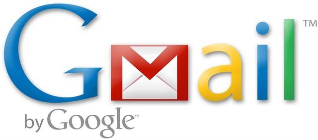
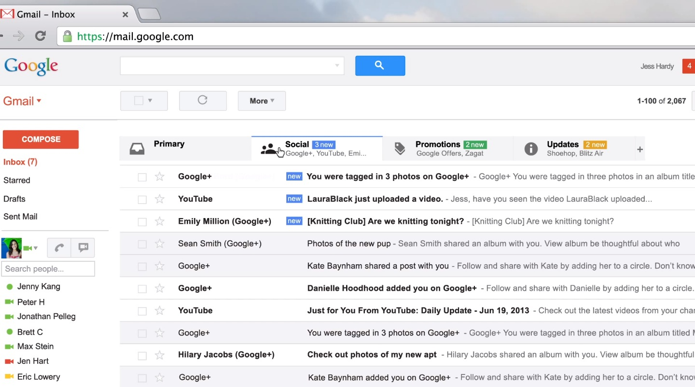
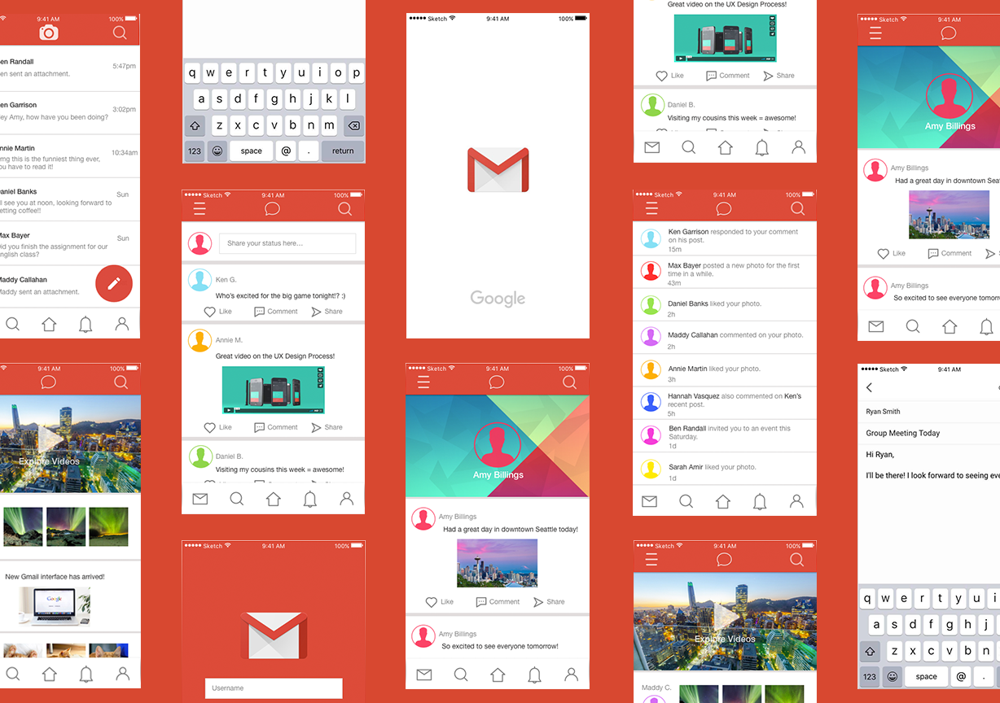
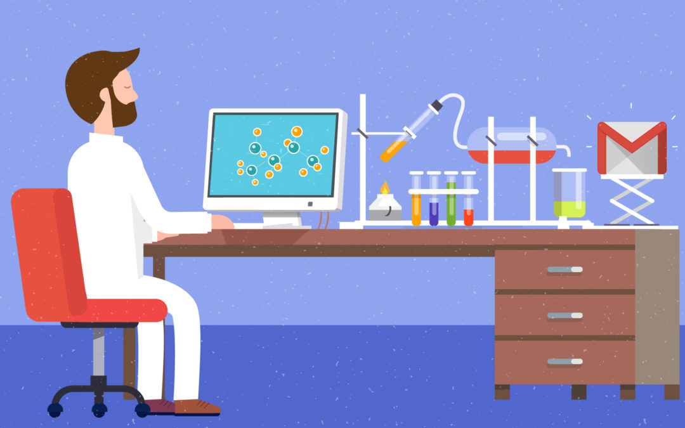

Gmail
Gmail
Gmail is a free emal service provided by google.it is used to send and recieve mails from any part of the world. Gmail had one billion dynamic clients worldwide, and was the first application on the Google Play Store to hit one billion establishments on Android.
To visit Gmail
click the imagelet's discuss the features of Gmail
Storage:-when Gmail was launched,the storage of gamil was 1 GB per user and was much more than need. after one year the storage amount was doubled.Users can buy additional storage, shared among Gmail, Google Drive and Google Photos, through a monthly subscription plan from Google One
Interface:-The Gmail at first contrasted from other webmail frameworks with its emphasis on pursuit and discussion threading of messages, gathering a few messages between at least two individuals onto a solitary page, a methodology that was later replicated by its rivals.
redesign:-.Google started revealing an overhaul of its interface that "rearranged" the look of Gmail into a more moderate plan to give a more steady look all through its items and administrations as a feature of a general Google configuration change. Major overhauled components incorporated a streamlined discussion see, configurable thickness of data, new higher-quality topics, a resizable route bar with constantly unmistakable marks and contacts, and better inquiry.
Gmail labs:- The Gmail Labs include enables clients to test new or test highlights of Gmail. Clients can empower or cripple Labs includes specifically and give criticism about every one of them. This permits Gmail designers to acquire client contribution about new highlights to enhance them and furthermore to survey their notoriety.The inquiry bar can likewise look contacts, records put away in Google Drive, occasions from Google Calendar, and Google Site.